Установка и настройка Foreman + Puppet
В данной статье мы рассмотрим как установить и настроить связку foreman + puppet, для удобного управления конфигурациями
Скачиваем и устанавливаем пакет для установки репозитория Puppet
cd /tmp && wget https://apt.puppetlabs.com/puppet5-release-xenial.deb sudo dpkg -i /tmp/puppet5-release-xenial.deb
Добавляем репозиторий Foreman
Скачиваем установщик Foreman
apt-get update && sudo apt-get -y install foreman-installer
Удалите hostname сервера из /etc/hosts
Запустите команду ping $(hostname -f) чтобы убедиться в корректности ip адреса (Адрес должен быть отличным от 127.0.0.1).
Запускаем установку Foreman
foreman-installer
После установки вы увидите следующее сообщение:
* Foreman is running at https://foreman-puppet Initial credentials are admin / PASS * Foreman Proxy is running at https://foreman-puppet:8443 * Puppetmaster is running at port 8140 The full log is at /var/log/foreman-installer/foreman.log
Foreman уже доступен и запущен.
Теперь установим Puppet агент на машину которая будет контролироваться нашим Puppet сервером.
Переходим в консоль машины и устанавливаем Puppet агент командой
apt-get install puppet
Теперь откроем файл /etc/puppet/puppet.conf и в секцию Main добавим имя нашей ноды и адрес сервера Puppet , должно получиться так:
[main] ssldir = /var/lib/puppet/ssl server = foreman-puppet certname = test-ubuntu1 [master] vardir = /var/lib/puppet cadir = /var/lib/puppet/ssl/ca dns_alt_names = puppet
Соответственно в переменную server указываем адрес puppet сервера, а в certname имя нашей ноды.
Перезапускаем сервис puppet агента
service puppet restart
И попробуем подключиться к нашему Puppet серверу
puppet agent --test
Кстати, если вы используете Ansible, то можете использовать следующий Playbook для установки и настройки Puppet агентов:
---
- hosts: servers_ubuntu
tasks:
- name: Run the equivalent of apt-get update
apt:
update_cache: yes
- name: Install Puppet Agent
apt:
name: puppet
state: latest
- name: Configure agent (Add Puppet server)
lineinfile:
path: /etc/puppet/puppet.conf
insertbefore: ssldir
line: server = foreman-puppet
- name: Configure agent (Add Node Hostname)
lineinfile:
path: /etc/puppet/puppet.conf
insertbefore: ssldir
line: certname = {{ ansible_hostname }}
- name: Restart Puppet agent
service:
name: puppet
state: restarted
- name: Connect to Puppet Server
command: puppet agent --test
Получаем ошибку — Exiting; no certificate found and waitforcert is disabled
Это из-за того что мы еще не подписали сертификат нашей ноды на сервере Puppet, перейдем в веб интерфейс foreman и подпишем сертификат.
Переходим в раздел Infrastructure -> SmartProxies
В разделе Actions нажимаем кнопку Edit и выбираем Certificates
Далее открываем вкладку PuppetCA , в ней выбираем пункт Certificates
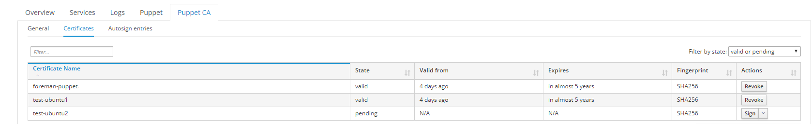
И нажимаем sign для подписи сертификатов клиентов.
Кстати, подписать сертификаты можно и через консоль, выполнив команду на сервере Puppet.
puppet cert sign CERT_NAME
Чтобы подписать сразу все сертификаты выполните
puppet cert sign --all
Теперь перейдем к работе с модулями. Давайте добавим первый модуль, пусть это будет NTP
Откроем ssh консоль и добавим первый модуль Puppet, ntp
puppet module install -i /etc/puppetlabs/code/environments/production/modules puppetlabs/ntp
Далее в веб интерфейсе foreman выбираем Configure -> Puppet -> Classes
Нажимаем кнопку Import Environments from Foreman
Теперь в списке появился модуль NTP , ставим на нем галочку нажимаем кнопку Update
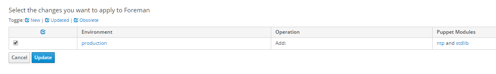
Открываем класс NTP , просто наживаем на его ссылку
В этом сценарии нам нужно отредактировать список NTP серверов в кофиге NTP.
Открываем вкладку Smart Class Parameter и в списке параметров выбираем Servers
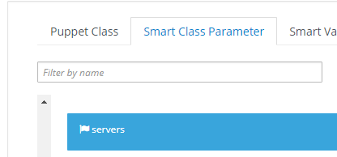
Внесем список серверов, для этого в разделе Default Behavior выберем тип array и укажем список ntp серверов как массив — [«192.168.0.15″,»192.168.0.16»]
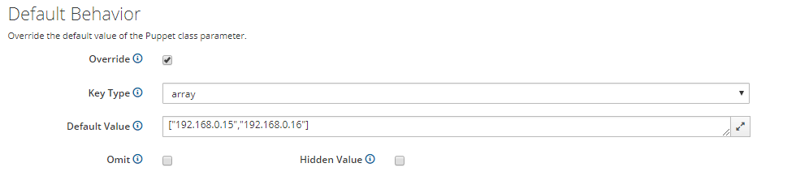
Также обратите внимание, что если на других пунктах помимо Servers установлен флажок, это означает что этот параметр переопределен.
Если вы не планируете его менять, снимите галочку override внутри этого пункта, иначе Puppet будет пытаться передать агентам пустые значения этих параметров.
После внесения изменений нажимаем кнопку submit
Теперь настроим наших Puppet агентов на получание новых настроек ntp
В Веб интерфейсе переходим в раздел Hosts и выбираем All Hosts
Выбираем нужный хост и нажимаем на нем кнопку edit
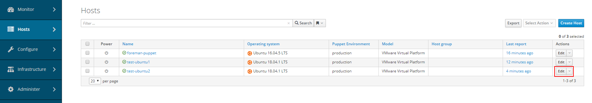
Выбираем вкладку Puppet Classes.
Ниже в разделе Available Classes нажимаем на ntp и нажимаем + на ntp
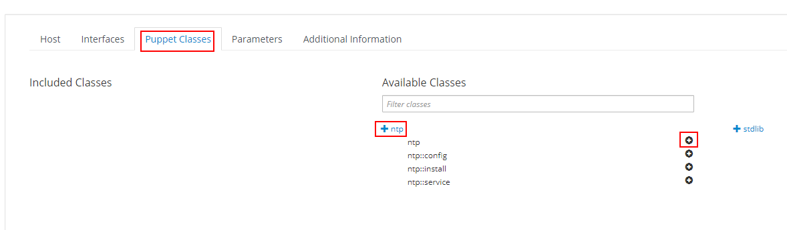
Как только ntp появится в Included Classes нажимаем кнопку submit
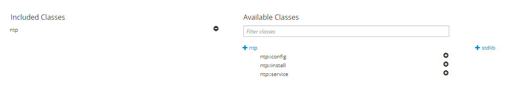
Теперь если подождать 30 минут или выполнить на хосте команду puppet agent —test , новая конфигурация ntp успешно примениться.
Обратите внимание, если на хосте с Puppet агентом изменить конфигурацию ntp вручную, то через 30 минут эти изменения будут перезаписаны, т.к. эталонная конфигурация будет скачена с сервера Puppet.
Теперь рассмотрим как добавить еще один модуль, например nginx и как создать группу хостов, на которые будет применяться конфигурация для nginx
Установим модуль nginx для Puppet
puppet module install -i /etc/puppetlabs/code/environments/production/modules puppet-nginx --version 0.13.0
Далее по аналогии импортируем класс в Configure -> Puppet -> Classes
Нажимаем кнопку Import Environments from Foreman
Открываем класс nginx.
Теперь настроим создание сайта в nginx, для этого в формате yaml добавим следующее значение в параметр Nginx Servers
Конфиг в формате yaml:
--- www.myhost.com: www_root: /opt/html/
Нажимаем кнопку submit.
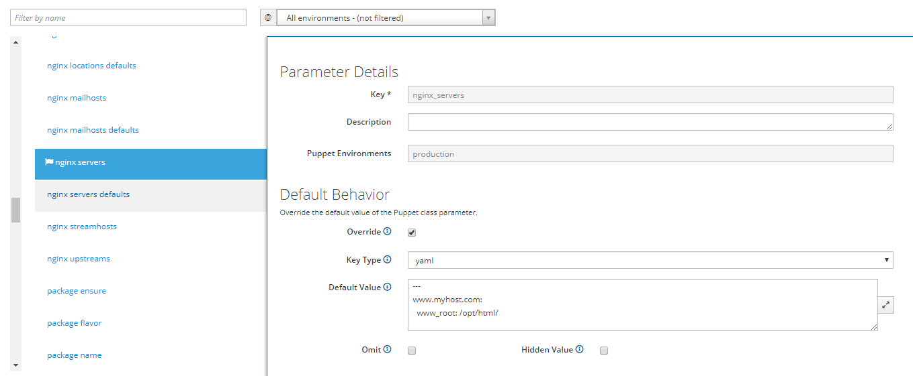
В этом конфиге мы настроили создание сайта www.myhost.com , файлы которого лежат в папке /opt/html/
Более подробно о том как настроить хосты в этом классе можно посмотреть тут https://github.com/voxpupuli/puppet-nginx
Теперь создадим группу хостов, которые должны будут применять этот параметр.
В веб интерфейсе открываем Configure -> Hostgroups и нажимаем кнопку Create Host Group
Заполняем название группы и выбираем сервера puppet.
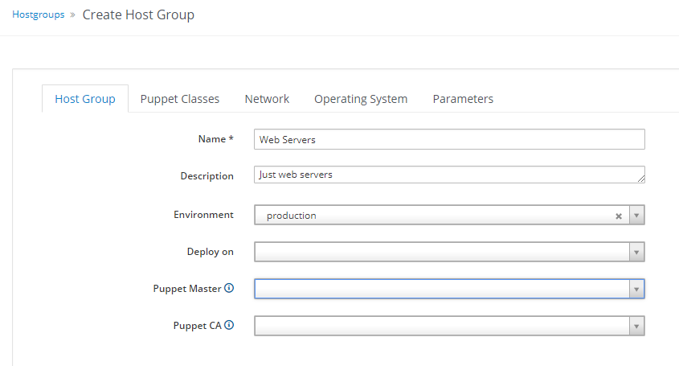
Далее открываем вкладку Puppet Classes и выбираем nginx, все также как мы делали ранее.
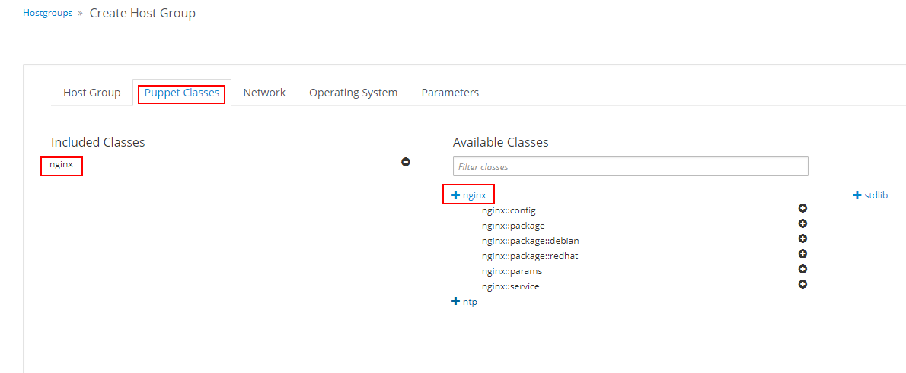
Нажимаем submit.
Обратите внимание что вы можете также во вкладке network настроить на какой домен должна распространяться хост группа и к каким подсетям относиться.
Теперь переходим в меню Hosts -> All hosts.
Отмечаем нужные хосты и наживаем change group.
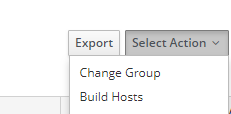
Далее выбираем созданную ранее группу.
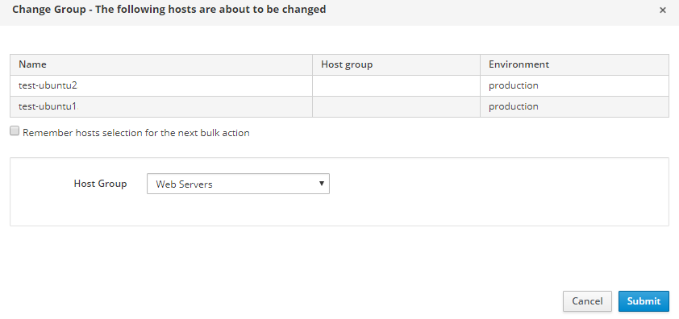
Теперь на всех хостах данной группы будет создан виртуальный хост nginx с сайтом www.myhost.com
А теперь давайте попробуем создать манифест не используя foreman, будем писать манифест самостоятельно.
Переходим в каталог /etc/puppetlabs/code/environments/production/manifests и создаем файл test.pp
nano /etc/puppetlabs/code/environments/production/manifests/test.pp
Содержимое файла будет таким:
file { '/tmp/testfile':
ensure => present,
content => 'this is test file',
owner => 'root',
group => 'root'
}
Сохраняем файл и проверяем, puppet агенты должны через 30 минут применить конфигурацию и создать в папке /tmp файл testfile с владельцем root и содержимым this is test file
Теперь добавим другой манифест, который будет создавать папку, а в ней файл, но таргетироваться он будет только на сервера test-ubuntu1 и test-ubuntu2.
Создаем файл с дефолтным правилом для нод
nano /etc/puppetlabs/code/environments/production/manifests/nodes.pp
В него вносим:
node default {
}
Теперь создаем манифест
nano /etc/puppetlabs/code/environments/production/manifests/testfolderServers.pp
Содержимое файла будет таким:
node 'test-ubuntu1','test-ubuntu2' {
file { '/tmp/testdirWEB':
ensure => 'directory',
}
file { '/tmp/testdirWEB/testfileWEB':
ensure => present,
content => 'this is test file in WEB directory',
owner => 'root',
group => 'root'
}
}
Теперь на серверах test-ubuntu1 и test-ubuntu2 будут созданы директории /tmp/testdirWEB и создан файл testfileWEB.
Рассмотрим как можно установить ПО на наши сервера, например поставим пакет samba , для этого создадим манифест
nano /etc/puppetlabs/code/environments/production/manifests/SambaInstallOnServers.pp
Сам файл будет таким:
node 'test-ubuntu1','test-ubuntu2' {
package { 'samba':
ensure => 'installed',
}
}
Запускаем на машинах puppet agent —test и видим что пакет samba успешно установился.
Итак, с применением изменений на несколько конкретных нод мы разобрались, теперь давайте рассмотрим вариант когда мы используем данные из Foreman, ведь гораздо удобнее добавлять ноды через группы хостов в Foreman, чем править вручную наши манифесты.
Чтобы все это провернуть нам нужно создать класс и импортировать его в foreman, рассмотрим создание самого простого класса, который будет устанавливать пакет atop
Создаем папку с модулем и переходим в нее
mkdir /etc/puppetlabs/code/environments/production/modules/ahtop cd /etc/puppetlabs/code/environments/production/modules/atop
создаем структуру каталогов
mkdir {manifests,templates,files,examples}
переходим в папку с манифестами и создаем манифест
cd ./manifests/ nano init.pp
Сам манифест будет следующий:
class atop {
package { 'atop':
ensure => 'installed',
}
}
Теперь по аналогии импортируем созданный класс atop разделе Configure -> Puppet -> Classes
После этого примените класс на хост группу и вы увидете что на серверах в группе установлен atop.
Подход Foreman + импортированные puppet классы является более гибким и масштабируемым, но знать как писать манифесты вручную тоже нужно =)
Теперь рассмотрим что делать если у одной из нод нужно заменить сертификат или например ее сертификат перестал быть валидным.
Переходим в раздел Infrastructure -> SmartProxies
В разделе Actions нажимаем кнопку Edit и выбираем Certificates
Далее открываем вкладку PuppetCA , в ней выбираем пункт Certificates
Выберите ноду и нажмите Revoke.
Теперь эта нода не сможет получать конфигурации с puppet, на ней будет ошибка:
Error: /File[/var/cache/puppet/facts.d]: Failed to generate additional resources using 'eval_generate': SSL_connect returned=1 errno=0 state=SSLv3/TLS write finished: sslv3 alert certificate unknown
Рассмотрим как исправить эту ситуацию.
Подключаемся по ssh к проблемной ноде и останавливаем сервис puppet
service puppet stop
Теперь найдем путь где лежат сертификаты агента Puppet
cat /etc/puppet/puppet.conf | grep ssl
Вывод следующий
ssldir = /var/lib/puppet/ssl cadir = /var/lib/puppet/ssl/ca
Удаляем сертификаты
rm /var/lib/puppet/ssl/certs/* rm /var/lib/puppet/ssl/certificate_requests/*
Запускаем агент
service puppet start
Выполняем puppet agent —test
Видим знакомое сообщение
Exiting; no certificate found and waitforcert is disabled
Возвращаемся на сервер Foreman.
Переходим в раздел Infrastructure -> SmartProxies
В разделе Actions нажимаем кнопку Edit и выбираем Certificates
Далее открываем вкладку PuppetCA , в ней выбираем пункт Certificates
Находим в списке нашу ноду и нажимаем sign.
Теперь нода успешно будет получать конфигурации с Puppet.
И последнее что я покажу в этой статье, это как можно вызывать API foreman внутри puppet манифеста.
Создадим файлы с логином и паролем для подключения к foreman.
echo 'admin' > /etc/puppetlabs/code/environments/production/manifests/foremanlogin.txt echo 'YOUR-PASSWORD' > /etc/puppetlabs/code/environments/production/manifests/foremanpassword.txt
Обязательно проверьте что в созданых файлах нет переноса строки (пустой строки) и лишних пробелов.
Теперь создадим манифест, который будет показывать сообщение со списком серверов в хост группе foreman — Web servers
nano /etc/puppetlabs/code/environments/production/manifests/WebServersGroupForeman.pp
Сам манифест будет следующий:
$foremanlogin = file('/etc/puppetlabs/code/environments/production/manifests/foremanlogin.txt')
$foremanpass = file('/etc/puppetlabs/code/environments/production/manifests/foremanpass.txt')
$query = foreman({foreman_user => "$foremanlogin",
foreman_pass => "$foremanpass",
item => 'hosts',
search => 'hostgroup = "Web Servers"',
filter_result => 'name',
})
$quoted = regsubst($query, '(.*)', '""')
$result = join($quoted, ",")
notify{"The value is: ${result}": }
Теперь если выполнить этот манифест на Puppet сервере вы увидете список серверов Puppet
Notice: The value is: "test-ubuntu1","test-ubuntu2"
Обратите внимание что в манифестах можно использовать regsubst, join, назначать переменные из файлов, а использовать переменные нужно в формате ${VARIABLE}
Но есть один подводный камень, если выполнить команду на других puppet агентах, которые не являются puppet сервером , то мы получим ошибку
Evaluation Error: Unknown function: 'foreman'. By default, the function foreman() is not available
Это потому что обычные агенты ничего не знают про модули foreman, они на них не установлены.
Чтобы это исправить делаем следующее:
Подключаемся к серверу Puppet по ssh и делаем линк на модуль foreman
ln -s /usr/share/foreman-installer/modules/foreman /opt/puppetlabs/puppet/modules/foreman
Теперь по аналогии импортируем созданный класс foreman разделе Configure -> Puppet -> Classes
Теперь ошибка function foreman() is not available на puppet агентах пропадет и манифест выполнится корректно.
Ну и на последок несколько полезных ссылок:
Доступные модули Puppet https://forge.puppet.com/
Огромный список рецептов по Puppet https://www.puppetcookbook.com/
Документация по Foreman https://www.theforeman.org/documentation.html
Документация по Puppet https://puppet.com/docs
Сообщество puppet где можно задавать вопросы https://puppet.com/community
Сообщество foreman где можно задавать вопросы https://community.theforeman.org
Надеюсь моя статья была для вас полезной, удачной установки! =)
Комментарии